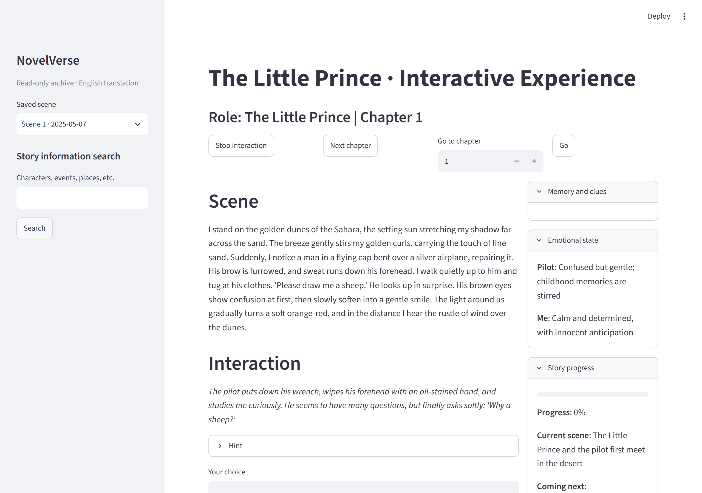

Bringing a world into interaction
How can a system represent a novel’s settings, characters, and events so that readers can experience more than a sequence of generated passages?
Interactive narrative & human-AI interaction
Research AssistantAIoT LaboratoryThe Chinese University of Hong Kong
Explore my researchScroll to open a world of possibilities.
Brush past the small shapes to nudge them, or drag and release. With keyboard focus, use arrow keys to move a shape and Enter or Space to pause it. Reduce motion stops automatic movement.
I study how AI-mediated interaction can help people experience and understand literary worlds. My work combines system building and interaction design to explore how readers can make their own choices while remaining engaged with the world an author created.
How can a system represent a novel’s settings, characters, and events so that readers can experience more than a sequence of generated passages?
How should an interactive world respond to a reader’s intended actions while respecting its own rules and ongoing development?
Independent research
I design and build prototypes that turn literary texts into interactive experiences. My current architecture combines a computational game master, specialized agents, and separate GM-facing and player-facing scripts.
My contributionSystem architecture, prototype development, interaction design, and analysis of saved interactions.

Building and testing successive prototypes helps me identify where the system’s interpretation of a reader’s action differs from what the reader intended.
Community-based mutual aid for rural eldercare
I co-designed the platform, conducted field studies and semi-structured interviews, and led prototype development and qualitative analysis.
Field research · Interaction design
Thermal analytics with natural-language interaction
I led development of an edge-deployable framework with agent-driven interaction over sensor data, as part of my work on sensing and interaction for eldercare.
System building · Edge AI
A tangible prototype that helps people with visual impairments identify appliance buttons through audio feedback, infrared sensing, and tactile cues. I led the interaction and hardware design and participated in user evaluation.
A team-built Unreal Engine 4 game combining exploration, shooting, puzzles, and racing. I designed interactive scenes and implemented player interactions within a cyberpunk world.
Selected papers, posters, and research manuscripts.
CHI 2026 Extended Abstracts · Poster
ACM HotSense 2025 · Workshop paper
IEEE ICETCI 2023 · Conference paper
Publicly available research manuscripts, not formally published.
My research connects system building with the experience of the person using it.
Research Assistant, AIoT Laboratory
Research on rural eldercare, accessible interaction, thermal sensing, and AI-assisted care systems.
Research Assistant
Research on language models, retrieval-enhanced question answering, progressive information acquisition, and multimodal document generation.
M.S. in Information Engineering
B.Eng. in Computer Science and Technology
BSc (Hons) in Computer Science
Upper Second-Class Honours (2:1)
Dual-degree programme with Beijing Jiaotong University, taught at Lancaster University College at BJTU in Weihai, China.
Supported programming instruction through assignment feedback, teaching slides, and practice problems.
Led review workshops and prepared learning materials for first-year undergraduates.
I came to computing through a love of novels and history. I wanted to step into those worlds and understand what it might feel like to live within them: to make choices, encounter their limits, and see how a larger social or historical world shapes an individual life.
That curiosity continues to guide my work on interactive narrative.
Interactive narrative. Human-AI interaction. Creative systems.
I design and build prototypes that turn literary texts into interactive experiences. The aim is to let readers explore through their own choices while remaining engaged with the world an author created.
NovelVerse explored first-person, multimodal interaction with fictional worlds. The current DC-HMAS prototype organizes free-text interaction through a computational game master, specialized agents, and separate GM-facing and player-facing scripts.
System architecture, prototype development, interaction design, and analysis of saved interactions. Building and testing successive versions helps me identify where the system’s interpretation of a reader’s action differs from what the reader intended.
How should an interactive world respond to a reader’s intended action while respecting its own rules and ongoing development? The handling of action consequences remains a question for further development and evaluation.
Private repositories are not accessible without permission. Manuscripts under review are not shared here.
My work connects interactive narrative and human-AI interaction with experience in system building, field research, multimodal generation, and evaluation.
Research Assistant, AIoT Laboratory, CUHK
Jun 2025-present
Rural eldercare, accessible interaction, thermal analytics, and AI-assisted care systems.
Research Assistant, Institute of Software, Chinese Academy of Sciences
Dec 2023-Apr 2025
Language models, retrieval-enhanced question answering, progressive information acquisition, and multimodal document generation.
The two undergraduate degrees were awarded through the dual-degree programme at Lancaster University College at BJTU in Weihai, China.
I have supported C programming instruction and taught calculus review sessions at Beijing Jiaotong University. My earlier projects include accessible appliance interaction and an Unreal Engine exploration game.